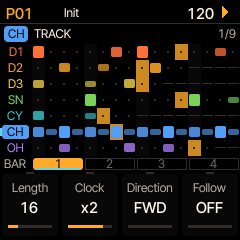

drum machine firmware for the M-VAVE FM-1 · 1 of 6
Black keys numbered 1–11 and white keys 1–16, left to right
HOME grid · black 1 (D1) · white 1 5 9 13 · black 4 (SN) · white 5 13 · black 6 (CH) · white 1 3 5 … 15 · PLAY. Turn PRESETS for kits, OCT+ loads one.
| White 1–16 | Steps of the bar on screen · patterns (pattern page) · rolls and effects (PERF) |
| Black 1–7 | Track: D1 D2 D3 SN CY CH OH (CH and OH share a voice) |
| Black 8–11 | Bar 1–4 · banks on pattern, song, save and load pages · repeat length in PERF |
| OCT− | SHIFT (hold): the screen shows what SHIFT (OCT−) + each key does |
| OCT+ | COPY (hold) · OK in dialogs · casts a spell |
| ALGORITHM | Select the track |
| SELECT | The page; in lists, the row |
| PRESETS | Kit browser; on a sound page, the sound browser |
| KNOB 1–4 | The four cards at the bottom of the screen |
| MASTER | Output volume |
| HOME | Grid → patterns → song |
| EDIT | Model → oscillator → FM → transient |
| ENV | Amp EG → gate → mod EG / velocity |
| SCL | Filter → shape → insert FX |
| LFO | LFO 1 → LFO 2 → random per hit → cross mod / choke |
| GLO | Mixer → config |
| FX | FX bus → reverb (SELECT for the pages) |
| SEQ | Track pages (track, generator, action, melody, scale, groove, bounce) → step edit |
| ARP | PERF: PERFORM → SPELLS → WANDER → GLOBAL MOD |
| SAVE | Save → load |
| PLAY · REC | Start / stop · record on / off |
| white 1–7 | Play that track's voice |
| white 8 · 9 | KIT: load a kit · MORPH: load the morph target |
| white 10 · 16 | SONG page · PATTERN page |
| white 11 · 12 | PROJECT: load a project · CONFIG |
| white 13 | RELOAD the kit and pattern as saved |
| white 14 | LAST: tap the track's last step (again: all tracks) |
| white 15 | FX |
| track key | Mute / unmute |
| bar key | Track length 16 / 32 / 48 / 64 |
| OCT+ | CLEAR: SELECT a choice, SHIFT (OCT−) + OCT+ again to confirm |
| GLO | Solo / unsolo the selected track |
| HOME | PERF RESET: every performance effect off |
| EDIT | KEYS: the keys play the track's voice |
| SEQ | The links |
| PLAY | Play the song from its start |
| REC · SAVE | Record options · load page |
| bar key | Copy the shown bar there (on the grid: every track) |
| track, track | Copy a track |
| pattern, pattern | Copy a pattern (pattern page) |
| held + knob | Control All (sound page): the knob on every track; let go, then OCT+ reverts, OCT− keeps |
On a sound page, hold a step key and turn a knob: that value for that step only. Turning knobs while recording writes locks too.
Bar height: velocity · outline: chance under 100% · notch: flam · tick below: shift · dot top right: lock · dot top left: condition · bar below: ratchet. Knobs: tempo (down to MIDI: follow clock), shuffle, length, volume.

Tap a white key to select a step (again: on / off). SELECT for the pages.
| Page | K1 | K2 | K3 | K4 |
|---|---|---|---|---|
| STEP | Note | Length | Velocity | – |
| TRIG | Chance | Condition | Shift | Flam |
| LOCKS | Lock 1 | value | Lock 2 | value |
| RATCHET | Hits | Shape | Rate | Fade |
Length: AUTO, 1/32 … 1/2, 3/4 … 64 BARS, INF (a drone), TIE (slides into the next note). Shape: even or BOUNCE.
Each page has two rows of four knobs: the button again (or SELECT) gives the other row. MODEL picks LXR, Rings, Plaits, CLOUD (a granular voice) or RAIN (its grains on tuned bells) (D1–D3; two Rings or Plaits at once, CLOUD and RAIN not counted), or a MICRO type, NOISE or ENSEMBLE (any track). The title flashes CPU OVERLOAD (and what) if the sound breaks up.
| KIT | 64 slots or the library's 128 · OCT+, name, OCT+ |
| PATTERN | 32 · a white key saves to that pattern |
| SONG | 64 · OCT+ |
| MORPH | Saves the mixture you hear; loads as the morph target |
| SOUND | The library's 128: one track's sound |
| PROJECT | 4 · everything |
| FACTORY | The 85 factory kits (load only) |
Naming: K1 position, K2 letter, K3 case; OCT+ saves, OCT− alone goes back.
Pattern page: white key queues a pattern, bar keys pick the bank. Song page: K1 song, K2 row, K3 the row's pattern (END, LOOP), K4 repeats (x1 … x16).
CC n sets parameter n − 1 (as the LXR), NRPN the rest; program change 0–31 (global channel) queues a pattern. Every channel, CC and the remote map: pages 5–6.
sequencing and performance · 2 of 6
Full manual: dmajka.github.io/elixir/manual
| Page | K1 | K2 | K3 | K4 |
|---|---|---|---|---|
| TRACK | Length | Clock | Direction | Follow |
| GENERATOR | Generator | its settings | ||
| ACTION | Action | Grids map X / Y, chaos · Euclid's second pulse | ||
| MELODY 1 | Shape | Spread | Bias | Steps |
| MELODY 2 | Deja vu | Loop | Length | Len var |
| SCALE | Root | Scale | Follow | Base |
| GROOVE | Groove | Amount | Humanize | Follow |
| BOUNCE | Bounce | Bnc pitch | – | – |
Clock: /4 · /3 · /2 · 2/3 · 3/4 · 1x · 4/3 · 3/2 · x2 · x3 · x4. A hat at x2 plays 32nds; 3/4 fits 12 steps in a bar. Add a length of its own (1–64) for polymeters.
| FWD · REV | 1 2 3 4 1 … · 4 3 2 1 4 … |
| PING | 1 2 3 4 3 2 1 2 … (the ends once) |
| PING2 | 1 2 3 4 4 3 2 1 1 2 … (the ends twice) |
| RAND · WALK | Any step · one step either way |
| EUCLID | Length, Hits, Rotate; a second pulse on ACTION (OR, XOR, AND, SUB) |
| MUTATE | Small changes each time round · Freeze stops it |
| TURING | Shift register: Length, Lock (127 repeats), Density |
| CELLULAR | Each time round the next row of rule 0–255 |
| GRIDS | The Grids drum map: Part, Density, Accent |
All but EUCLID play a live copy; COMMIT (ACTION page, OCT+) writes it into the pattern.
SHIFT (OCT−) + key latches it. Black keys mute. Bar keys: repeat length 1/4 … 1/32. ALGORITHM picks the throw track.
| Key | PERFORM | PERFORM 2 |
|---|---|---|
| 1–7 | Roll the track | DRILL: random fast ratchets |
| 8 | FILL | HLF: half time |
| 9 | RPT: repeat | JIT: jitter |
| 10 | FRZ: freeze the delay | CUT: random cuts |
| 11 | T.RV: throw to reverb | SHT: decays short |
| 12 | T.FX: throw to FX bus | PMP: pump off D1 |
| 13 | FB+: feedback push | RES: comb resonator |
| 14 | STP: tape stop | SPC: reverb pad |
| 15 | LP~: low-pass sweep | CRS: crush |
| 16 | HP~: high-pass sweep | REV: reverse |
| Page | K1 | K2 | K3 | K4 |
|---|---|---|---|---|
| PERFORM | Tempo | Roll rate | Morph | SRate |
| MORE | Master filter | Repeat | Shuffle | Tape time |
| DENSITY | Density | Ghost vel | Build | Vary |
| STUTTER | Chance | Size | Length | Vary |
| RUSH | Rush | Top | Filter | Glide |
| RUSH SETUP | Roll at | Free at | Flam | Pitch |
| TRANSPOSE | Degrees | When | Keys | – |
| 2: SETUP 1 | Drill | Jitter | Cuts | Pump |
| 2: SETUP 2 | Comb | Comb fb | Crush | Reverse |
Hold a roll key and turn K2 on PERFORM: a sweep from 1/4 to 1/192.
| LFO 1–3 | Dest, Depth, Speed (1/16 … 256 bars), Wave · Mode, Trig, Phase |
| MACROS | Four knobs, each a parameter between Min and Max (MACRO SETUP) |
| LINKS | Eight couplings between tracks: When, Target, Effect, Window |
| Density | −100% thins the groove, weakest steps first (off-beat 16ths, then 8ths, quiet before loud); +100% raises chances, then adds |
| Ghost vel | Velocity of the added notes |
| Build | What + adds: CHANCE, GHOSTS, RATCH (ratchets) |
| Vary | OFF the same steps go first; up, a new order each time round |
Black keys leave a track out. OCT+ commits it into the pattern.
| Chance | Chance of a burst at each Length (0%: only OCT+ and LFOs) |
| Size | The slice: 1/8 … 1/64, triplets, RANDOM |
| Length | How long a burst lasts: 1/16 … 1 bar |
| Vary | OFF, SHRINK, PITCH DN / UP, REVERSE, RANDOM |
OCT+ held on the page stutters now. It repeats the sound itself, tails and reverb included.
Up to 8 per pattern, read as a sentence: When D1 hits, CH chance −60%, on the next step.
| When | A track that hits, accents (vel. over 100) or rests |
| Effect | DUCK, ONLY, TRIG, RATCH, VEL, PITCH, SHIFT, DECAY |
| Window | SAME step, NEXT, NEXT 2, the rest of the BAR |
SHIFT (OCT−) + white 9 loads a second kit as the target; PERFORM's K3 crossfades every sound parameter to it (switches flip halfway). M in the header while it's above 0.
| GLO | Volume, pan, FX send, reverb send (2 pages each) |
| FX send | How much of the voice goes through the FX bus |
| Reverb send | Feeds the reverb on top of the output |
| FX | FX bus (delay with TAPE and GRAIN modes, dirt, compressor) → reverb |
spells, and what's not obvious · 3 of 6
Full manual: dmajka.github.io/elixir/manual
Changes the sound and pattern of the tracks you pick, at random but in a direction.
| 1 Targets | Black keys (bar key 1: all / none) |
| 2 Parts | White keys: what may change (below) |
| 3 Spell | K1 on GRIMOIRE |
| 4 Cast | COPY (OCT+); again: a new roll from before the first |
| 5 Undo | SHIFT (OCT−) alone: the pattern and kit as before |
| Bar keys | 1 all / none · 2 keep · 3 save a recipe · 4 knobs reset |
| GRIMOIRE: which spell | |
|---|---|
| Spell | NONE, the eleven spells, then your recipes U1–U8 |
| Variation | EXACT casts the knobs as set; higher nudges them a little each cast |
| Scope | White-key presets: ALL, SOUND, PATTERN, VOICE, SHAPE, SPACE … |
| Roll | NEW each time; SAME repeats the last roll elsewhere |
| CAST: how much | |
| Sound | How far the voices move; 100% (FREE) frees the kick and toms |
| Pattern | How much the steps change (OFF: none) |
| Density | Fewer hits (left) or more (right); AS IS in the middle |
| Chaos | Low follows the beats; high anything goes |
| CHARACTER: which way (names: next column) | |
| K1 | The sound's character |
| K2 | The rhythm's character |
| K3 | Evolution: how much keeps changing after the cast |
| K4 | Protection: keeps kick, snare, key, main pulse |
| LIMITS: the most any spell sets (shared, saved) | |
| Sends | Rev Send, FX Send: cap each target's sends |
| Levels | Rev Level, FX Mix: cap the shared FX |
| MOTION: how far the tracks part (needs 15 LEN) | |
| Motion | SAME · ONE track at its own speed or direction · FEW · MANY · FREE |
| Lengths | BARS 16/32/64 · EVEN +12, 24 · ODD +7, 14, 15, 20 |
| None | Plain chance: Sound from a nudge to anything | Spread, Detail, Motion, Protect |
| Poltergeist | Metallic, unstable hits and rattles | Metal, Rattle, Haunting, Preserve |
| Skeleton | The groove stripped to its bones (pattern only) | Emphasis, Syncope, Variety, Anchors |
| Glitch Storm | Digital errors, bursts, cuts, fills | Corrupt, Fragment, Unstable, Groove |
| Haunted Dub | Dark filters, echoes, space; kick dry | Darkness, Echo, Drift, Dry Kick |
| Forbidden Ritual | All at once: models, steps, links, FX | Alchemy, Disorder, Possess, Protect |
| Raster Séance | Microsound clicks, grains, silences | Grain, Fragment, Jitter, Backbone |
| Concrete Drift | Minimal changes over many bars | Texture, Motion, Drift, Stability |
| Rust Circuit | Industrial metal, drive, cycles | Corrode, Machine, Malfunct, Pulse |
| Glass Cathedral | Resonant, tuned, glassy, in one key | Brilliance, Harmony, Shimmer, Tuning |
| Biofeedback | Tracks answering each other | Coupling, Response, Adapt, Freedom |
| Whispering Motes | Soft microsound dust and chirps | Grain, Scatter, Whisper, Anchors |
The screen says what a CHARACTER knob does as you turn it. D1 stays a kick and D2, D3 toms unless Sound is 100%. SHIFT (OCT−) + a white key: only that part.
| Sound (white 1–8) | Pattern (white 9–16) | ||
|---|---|---|---|
| 1 PIT | pitch | 9 HIT | which steps play |
| 2 OSC | osc, FM, models | 10 ACC | accents |
| 3 TRN | transient | 11 PRB | chance, conditions |
| 4 ENV | envelopes, level | 12 TIM | timing, flams |
| 5 FLT | filter | 13 RAT | ratchets |
| 6 DRV | drive, shaper, bits | 14 NOT | notes |
| 7 FX | sends, pan, insert | 15 LEN | length, clock, direction |
| 8 MOD | random, LFO 2, xmod | 16 LNK | links, generators |
Lost? SHIFT (OCT−) + HOME (PERF RESET) turns every held, latched or running performance effect off. The LFOs, morph and macros stay.
Control All lets you back out. Hold OCT+ on a sound page and turn: every track moves. Let go and it asks: OCT+ reverts the whole kit, OCT− keeps it.
Generators don't touch your pattern (but EUCLID does): MUTATE, TURING, CELLULAR and GRIDS play a live copy. COMMIT keeps what you hear; RESET starts over.
Clocks change time, not steps. A track at 3/4 still has 16 steps; they just take 4/3 of a bar. Give it 12 steps to fit a bar.
KEYS stays on as you change pages: play the voice while you turn knobs. The header shows KEYS. SHIFT (OCT−) + a key plays at the accent velocity.
Recording: REC, then PLAY. Knob moves on sound pages become locks on the steps that are on; SHIFT (OCT−) + CLEAR erases the track's steps as they pass.
Morph and edits: with morph up, a knob moves the target too, so you hear the edit at any amount (CONFIG → MORPH to change it).
Solo isn't saved and the mutes come back as they were when the last solo goes.
Kits: PRESETS lists the 85 factory kits, then the library, then the project's 64 slots. The library stays whatever project is loaded.
The engines a cast may use: 1 LXR · 2 RNG Rings · 3 PLT Plaits · 4 MIC MICRO, NOISE · 5 KCK D1 the LXR's kick. All lit: the spell picks; none: engines kept.
wander, rush, transpose, roads · 4 of 6
Full manual: dmajka.github.io/elixir/manual
The pattern changes slowly, over minutes, until you are somewhere else. Patterns are never changed for good: the one you leave gets its steps back.
| 1 Tracks | Black keys (bar key 1: all / none) |
| 2 Parts | White keys: what may change (SHIFT (OCT−) + white: only that one) |
| 3 Quest | K1 on QUEST, how long with Journey |
| 4 Set out | COPY (OCT+): here is home (the pattern, the voices, the morph kit) |
| 5 Home | SHIFT (OCT−): back over Return bars; again: at once |
| Page | K1 | K2 | K3 | K4 |
|---|---|---|---|---|
| QUEST | Quest | Journey | Fate | Goal |
| PACE | Sound | Rhythm | Range | Stride |
| HOME | Return | Memory | Order | Sway |
| Sound | Bars a voice moves a notch (OFF: rhythm only) |
| Rhythm | Bars an Energy / rhythm step, at the pattern's start |
| Range | How far Energy swings (thin to twice as busy) |
| Stride | Step size, threads at once (1–3) |
| Goal | NONE (open road: the steps change), P01–P32 (walk there), SONG (the song's rows) |
| Fate | HOME · TREASURE (one change kept) · WOUND · LOST (here is home) · DICE |
| Memory | How often the road returns to a version you heard |
| Order, Sway | Goal SONG: the next row (IN ORDER, ROADS, ANY); how much the time varies |
| black 8 | Every track, or none |
| black 9 | KEEP: here is home now |
| black 10 | REST: the road waits; again, on |
| SHIFT + black 10 | POSTCARD: where you are into the first empty pattern, its voices LOCKED (SAVE to keep it) |
| black 11 | Wander's knobs and keys as at first |
ROAD one steady walk · ROUND out and back · SPIRE climb, summit, down · HOLLOW into the cave, to a pulse, out · TIDE ebb and flood · DETOUR side quests · ASTRAY anywhere, never home · MAZE by rule · ROSARY hits leave one by one, then return · POND the slowest · WHEEL an endless, rhythm-only beat
Rhythm under a morph: Sound OFF (or WHEEL), OSC/MODELS out, and a global LFO on MORPH sweeps between two kits while the road changes the steps.
A spell cast on the road is a side journey: reverse it and the road goes on. Coming home, each melody starts again from its top.
Black key: the rush track. Turn Rush: the other drums go over to it (hats first, kick last), it rolls on the grid (16ths, 32nds), then free up to Top (1/64–1/256); the high-pass opens at the top. Slow turns 1% a detent, fast spins 10%.
REC + turn: RUSH locks in the steps. On RUSH pages the white keys are the steps: hold one and turn to lock it.
White keys: −7 … +8 degrees of the scale (the 8th, breathing, is 0). Black keys: which tracks move. When: NOW, BEAT, BAR. Keys: LATCH or HOLD. Not saved.
Base (SCALE, K4): the track's base note, ±2 octaves; every note follows it, but a step whose Note you turned on STEP (it reads Locked).
STEP's Length: AUTO, 1/32 … 1/2, 3/4, 1 BAR … 64 BARS, INF (a drone till the track's next note), TIE. Holds a voice with Gate ON (amp EG's next page).
ARP UP, DN, U/D, then CONVERGE 1-4-2-3 · DIVERGE 2-3-1-4 · CON/DIV · LEAPFROG 1-3-2-4 · SPIRAL 1-2-4-3 · ALTERNATE · PAIRS 2-1-4-3 · ROTATE 1234 2341 · INVERT 1234 4321 · PEDAL 1-2-1-3-1-4. Over the chord tones, Spread wide.
| K1 | K2 | K3 | K4 |
|---|---|---|---|
| Song | Way: PLAY / ROADS | Surprise | Home |
ROADS plays the song by its own chances: after a row, the row after another with the same pattern. Surprise lets in the rarer turns; Home brings it back to row 1 every so many bars.
MIDI: channels, launching, channel 10, the sound by CC · 5 of 6
Set the channels in CONFIG → MIDI CHANNELS and REMOTE
| Channel | Default | Takes |
|---|---|---|
| Tracks D1 … OH | 1–7 | notes play the track · the LXR's CCs for its voice |
| Global | 10 | patterns (program change), kits (CC 102 / 126, 103 / 127), a keyboard (notes, mod wheel): Global in (right) |
| Remote TRACKS | 15 | the remote map (page 6): per-track knobs, mute, solo · patterns, kits (PC, CC 126, 127) |
| Remote GLOBAL | 16 | the remote map (page 6): transport, effects, patterns · patterns, kits (PC, CC 126, 127) |
Keep the remote channels apart from the track and global ones. A CC for a voice is taken on its track's channel; one with no voice (FX bus, SRate) on any track's.
| Program change 0–31 | Channel 10, 15, 16: pattern 1–32, at the pattern's end (stopped: at once) |
| CC 102, value 0–63 | Channel 10: slot kit 1–64, at once |
| CC 103, value 0–84 | Channel 10: factory kit 1–85, at once |
| CC 126 · CC 127 | Channel 10, 15, 16: slot · factory kit, as 102 · 103 |
| CC 125, value 0–63 | Channel 10, 15, 16: the morph kit (slot 1–64), as LOAD → MORPH |
| CC 124 | Channel 10, 15, 16: master volume (127 full), saved in the settings |
| CC 0, value 0–63 | A track's channel (10 at ALL): slot kit, as the LXR |
| GLOBAL 60 / 61 | Remote channel 16, CC or note: the previous / next pattern |
| One channel | Every track on one channel (MIDI CHANNELS) + a note each (MIDI NOTES): as a TR-8S |
| Notes out | CONFIG → MIDI OUT: a track's hits out on its channel (all OFF by default; TX N too) |
| Clock | Out always (24 PPQ, start, stop). In: turn the tempo down to MIDI |
| Filters | CONFIG → MIDI: N notes, R clock, C CC + NRPN, P program change |
| Route | TRS>USB: the jack's input on to USB |
| Your own CCs | The library page's CC map: any CC to any parameter (by name), or off; CSV in and out |
USB is the only MIDI out, so the remote's lights need both on a USB host.
| D1 | D2 | D3 | SN | CY | HH | |
|---|---|---|---|---|---|---|
| Volume | 89 | 90 | 91 | 92 | 93 | 94 |
| Pan | 95 | 96 | 97 | 100 | 101 | 102 |
| Drive | 103 | 104 | 105 | 106 | 107 | 108 |
| Sample rate | 109 | 110 | 111 | 112 | 113 | 114 |
| Coarse | 9 | 11 | 13 | 15 | 17 | 19 |
| Fine | 10 | 12 | 14 | 16 | 18 | 20 |
| Waveform | 2 | 3 | 4 | 5 | 7 | 8 |
| FM / mod wave | 21 | 22 | 23 | – | 24 25 | 26 27 |
| Filter freq | 38 | 39 | 40 | 41 | 42 | 43 |
| Resonance | 44 | 45 | 46 | 47 | 48 | 49 |
| Attack | 50 | 52 | 54 | 56 | 58 | 60 |
| Decay | 51 | 53 | 55 | 57 | 59 | 61 CH 62 OH |
| Amp slope | 63 | 64 | 65 | 66 | 67 | 68 |
| Repeat | – | – | – | 69 | 70 | – |
| Pitch EG decay | 71 | 72 | 73 | 74 | – | – |
| Pitch EG amt | 75 | 76 | 77 | 78 | – | – |
| Pitch EG slope | 79 | 80 | 81 | 82 | – | – |
| FM amount | 83 | 85 | 87 | – | – | – |
| FM freq | 84 | 86 | 88 | – | – | – |
| LFO freq | 116 | 117 | 118 | 119 | 120 | 121 |
| LFO amount | 122 | 123 | 124 | 125 | 126 | 127 |
Values go in as they are: lists (waveforms 0–5) take their small numbers, pans 63/64 center. HH CCs act on CH and OH, but for the decays.
| 28, 29 | SN noise frequency, noise / osc mix |
| 30–33 · 34–37 | CY · HH: mod 1 freq, mod 2 freq, mod 1 gain, mod 2 gain |
| 115 | Global sample rate |
CONFIG → MIDI CHANNELS, page 2, KNOB 4. OFF: nothing.
| Message on 10 | KEYS (default) | PAT+KIT | ALL |
|---|---|---|---|
| Program change 0–31 | pattern | pattern | pattern |
| CC 102 / 126 · 103 / 127 | slot · factory kit | slot · factory kit | the sound |
| CC 125 · 124 | morph kit · volume | morph kit · volume | the sound |
| Notes | selected track | – | selected track |
| CC 1 mod wheel | MACRO 1 | – | – |
| CC 0 / 32 bank | – | – | CC 0: slot kit |
| Bend, other CCs | – | – | CCs: the sound, NRPN |
Elixir sends a program change on 10 when its pattern changes (TX filter P). Clock and start/stop have no channel: followed with the tempo at MIDI. Send a kit after the pattern: a pattern can bring its own.
| Remote | Channel 10 CC (D1 … HH) |
|---|---|
| 15: Volume | 89–94 |
| 15: Pan | 95 96 97 100 101 102 |
| 15: Filter · Reso | 38–43 · 44–49 |
| 15: Decay | 51 53 55 57 59 · 61 CH, 62 OH |
| 15: Pitch | 9 11 13 15 17 19 |
| 15: Sample rate | 109–114 |
| 15: LFO amount | 122–127 |
| 16: SRate (11) | 115 |
| 16: 60 / 61 | program change (any pattern) |
Whichever arrives last wins. The remote's sends, shuffle, morph, roll, FX and reverb knobs match NRPNs on 10. Remote 16's transport, mutes, solo, select, rolls and effects have no channel 10 twin.
MIDI: the remote map · 6 of 6
For an 8-column controller (Launch Control XL) · ⇄ toggles
| D1 | D2 | D3 | SN | CY | CH | OH | sel | |
|---|---|---|---|---|---|---|---|---|
| Volume | 8 | 9 | 10 | 11 | 12 | 13 | 14 | 15 |
| Pan | 16 | 17 | 18 | 19 | 20 | 21 | 22 | 23 |
| Filter freq | 24 | 25 | 26 | 27 | 28 | 29 | 30 | 31 |
| Resonance | 32 | 33 | 34 | 35 | 36 | 37 | 38 | 39 |
| Decay | 40 | 41 | 42 | 43 | 44 | 45 | 46 | 47 |
| Pitch | 48 | 49 | 50 | 51 | 52 | 53 | 54 | 55 |
| Delay send | 56 | 57 | 58 | 59 | 60 | 61 | 62 | 63 |
| FX send | 64 | 65 | 66 | 67 | 68 | 69 | 70 | 71 |
| Reverb send | 72 | 73 | 74 | 75 | 76 | 77 | 78 | 79 |
| Sample rate | 80 | 81 | 82 | 83 | 84 | 85 | 86 | 87 |
| LFO amount | 88 | 89 | 90 | 91 | 92 | 93 | 94 | 95 |
| DENSITY | 96 | 97 | 98 | 99 | 100 | 101 | 102 | 103 |
| Mute ⇄ | 104 | 105 | 106 | 107 | 108 | 109 | 110 | 111 |
| Solo ⇄ | 112 | 113 | 114 | 115 | 116 | 117 | 118 | 119 |
Knobs are CCs (8–103); buttons (104–119) a CC or a note. Column 8: the selected track. CH and OH share the hat voice, but for their decays. DENSITY: the track's own, centered at 64, on top of 16's CC 28.
| Buttons | A CC above 0 or a note on presses, CC 0 or a note off lets go |
| Mute/solo | PRESS: a press flips it · TOGGLE: the button's state is the mute (toggle pads) |
| PICKUP | (default) a knob acts once it passes the value: nothing jumps |
| ABS · REL | Straight to the position · endless encoders (64 ± n, or 1 / 127) |
| Recording | Under REC, a TRACKS knob records locks on its track |
| Feedback | Values and button states go back out on USB, so rings and lights follow |
| Patterns | 60 / 61 step them; to launch one, send program change 0–31 on the global channel (page 5) |
CONFIG → REMOTE: Tracks, Global (channels), Knobs (PICKUP / ABS / REL), Mute/solo (PRESS / TOGGLE).
| 8–15 | 8Tempo | 9Shuffle | 10Morph | 11SRate | 12Master filter | 13Roll rate | 14Repeat | 15Tape time |
| 16–23 | 16FX wet | 17P1 | 18P2 | 19P3 | 20P4 | 21Bus dirt | 22Echo>rev | 23Saturate |
| 24–31 | 24Rev level | 25Rev size | 26Rev damp | 27Mstr dirt | 28DENSITY | 29Ghost vel | 30Build | 31Vary |
| 32–39 | 32Macro 1 | 33Macro 2 | 34Macro 3 | 35Macro 4 | 36DRILL | 37JITTER | 38CUTS | 39PUMP |
| 40–47 | 40COMB note | 41COMB fb | 42CRUSH | 43REV len | 44LFO1 dep | 45LFO2 dep | 46LFO3 dep | 47Filter reso |
| Delay | 96Time | 97Feedback | 98Tone | 99Band | 100Wow | 101Glitch | 102Route | 103Rev>FX |
| RING · LFO 4 | 3Wet | 4Slope | 5Tone | 7Tune | 63Spread | 2LFO4 dep |
GRAIN: Time is Position, Wow Size, Glitch Density (Saturate, 23, Scatter). Band 0: off. RING's root is the master filter (12), its Decay Filter reso (47).
| Transport · held | 48PLAY/STOP | 49REC | 50FILL | 51REPEAT | 52FREEZE | 53THROW REV | 54THROW FX | 55FB PUSH |
| Held · patterns | 56TAPE STOP | 57LP sweep | 58HP sweep | 59REVERSE | 60◀ pattern | 61pattern ▶ | 62CTRL ALL tap/hold | 63knob |
| Select | 64D1 | 65D2 | 66D3 | 67SN | 68CY | 69CH | 70OH | 71CA revert |
| Roll (held) | 72D1 | 73D2 | 74D3 | 75SN | 76CY | 77CH | 78OH | 79sel |
| DRILL (held) | 80D1 | 81D2 | 82D3 | 83SN | 84CY | 85CH | 86OH | 87sel |
| Effects: tap latches, hold holds | 88HALF | 89JITTER | 90CUTS | 91SHORT | 92PUMP | 93COMB | 94SPACE | 95CRUSH |
| DENSITY out ⇄ | 104D1 | 105D2 | 106D3 | 107SN | 108CY | 109CH | 110OH | 111all in |
| Roll (fader) | 112D1 | 113D2 | 114D3 | 115SN | 116CY | 117CH | 118OH | 119sel |
The effects are PERF's and work from any page. DENSITY out: 104–110 leave a track out of DENSITY (again: back in), 111 puts them all back. Roll faders: the value is the rate, 1–32 on the grid (1/4 … 1/32), 33–127 free (1/32 … 1/256), 0 off; several at once, while playing. Effects and CONTROL ALL: a tap (under ¼ s) latches, again off; a longer press holds (TOGGLE pads: the button's state). CONTROL ALL (62): a voice's CC / NRPN / TRACKS knob moves every track in it by its step, the panel's knobs too; 64–70 leave a track out (again: in); off keeps; 71 reverts.